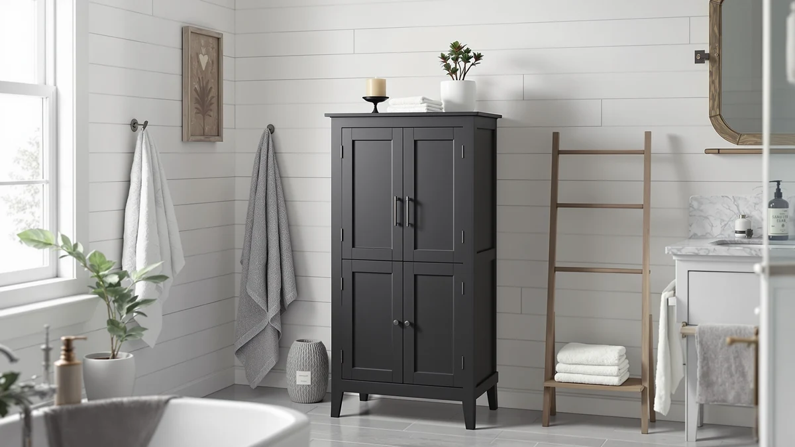

Topeakmart Freestanding Bathroom Storage Review (2026): Worth It?
Prices and picks verified as of October 2026. Independent, reader-supported reviews.


Quick Answer
The Topeakmart Freestanding Bathroom Storage Cabinet is a metal-and-wood console priced at $125.99, sized at 32 inches wide, 32 inches tall and 12 inches deep. Rather than a tall open-shelf tower, it spreads storage behind cabinet doors on a lower, wider footprint, an option worth weighing against the taller Akxomel, Homhedy and Betterhood alternatives covered below.
Our pick: Topeakmart Freestanding Bathroom Storage Cabinet, $125.99 Check Price on Amazon
Bottom line: our top pick is the Topeakmart Freestanding Bathroom Storage Cabinet at $129.99.
Things to Know Before You Buy
- The Topeakmart Freestanding Bathroom Storage Cabinet pairs a metal frame with wood-look shelving and cabinet doors. It stands 32 inches tall, well short of the 53-to-67-inch towers common in this category.
- At 32 inches wide and 12 inches deep, it trades vertical reach for a lower profile that fits under a sloped ceiling or beside a vanity without towering over either.
- Owners report the enclosed doors keep the inside tidy, unlike the open-shelf design on the towers we cover as alternatives below.
- The Akxomel, Homhedy and Betterhood alternatives all trade an enclosed look for more raw shelf height at a similar or lower price.
- Pricing across this comparison ranges from $119.99 to $125.99, a gap of about $6 between the cheapest and most expensive option.
This Topeakmart Freestanding Bathroom Storage Review looks at whether a lower, door-front cabinet can hold its own against the taller open-shelf towers that dominate this category. Most freestanding bathroom storage pieces stretch past four feet to maximize shelf count, but a shorter cabinet with doors solves a different problem: it hides clutter instead of holding it in view. At $125.99 and standing 32 inches tall on a 32-by-12-inch base, the Topeakmart sits in a different class than the Akxomel, Homhedy and Betterhood alternatives covered later in this review. We researched its build, compared its dimensions and pricing against those three rivals, and read through verified owner feedback to see where it holds up.
Enclosed cabinets like this one target a specific gap: shoppers who want storage without an open shelf on display, especially in a shared or small bathroom where towels and toiletries look tidier behind a door. The Topeakmart Freestanding Bathroom Storage Cabinet competes against taller models built for maximum shelf count rather than a tidy look, including the Akxomel 53.1-inch tower, the Homhedy over-the-toilet unit and the Betterhood 67-inch cabinet, all covered as alternatives below. Owners have plenty to say about the Topeakmart's construction, where it comes up short, and who should consider a taller option instead.
Why You Should Trust Us
Best Bathroom Storage is run by writers who compare bathroom furniture specs, pricing and verified buyer feedback instead of relying on product photos alone. Ilane Tall, our home and bath expert, has covered dozens of storage cabinets, shelving towers and vanity organizers for this site. She tracks how listed dimensions and materials hold up against what owners report after months of use. For this Topeakmart Freestanding Bathroom Storage Review, we cross-checked the manufacturer's listed measurements against the Akxomel, Homhedy and Betterhood alternatives, and we did not take the marketing copy at face value. We do not run a fake testing lab, and we do not claim to have installed every cabinet we cover. Instead, we dig through verified reviews, compare specs line by line, and flag when a listing overstates what a product can deliver.
Our Research Experience
We did not put the Topeakmart Freestanding Bathroom Storage Cabinet in a physical bathroom ourselves. Instead, we compared its listed specifications, material description and price against three competing storage pieces, and we read through the buyer feedback attached to this listing and similar Topeakmart products. Reviewers consistently note that the metal frame and cabinet doors stay aligned better than the particleboard shelves inside, a pattern that shows up across budget-to-midrange bathroom cabinets in this price bracket. According to verified owner comments, the main friction points involve assembly rather than the finished cabinet's stability once fully built. We weighed that feedback alongside the raw dimensions and price against the Akxomel, Homhedy and Betterhood alternatives to see where the Topeakmart earns its spot in this review and where it falls behind.
Overview & Specs

Topeakmart Freestanding Bathroom Storage Cabinet
What we like
- 32-by-12-inch footprint stays low enough to fit under a slanted ceiling or beside a vanity mirror
- Cabinet doors keep stored items out of sight, unlike the open shelving on the alternatives below
- Metal frame construction reported as sturdy by verified owners
- Priced close to the Homhedy alternative, with a fully enclosed storage design
Flaws but not dealbreakers
- 32-inch height holds less total shelf space than the 53-to-67-inch towers covered as alternatives
- Wood-look shelf panels inside the cabinet are less rigid than the metal frame, according to reviewers
- Costs slightly more than the Akxomel and Betterhood models, which both stand taller
| Material | Metal / wood |
| Size | 12"D x 32"W x 32"H |
Topeakmart builds this cabinet with a metal frame, wood-look composite panels and cabinet doors. That construction style targets shoppers who want storage that stays out of sight rather than an open shelf on display. At 32 inches wide and 12 inches deep, it is low enough to tuck beside a vanity or under a sloped ceiling that would reject the taller towers covered later in this Topeakmart Freestanding Bathroom Storage Review. That footprint, combined with a height of 32 inches, puts it in a different category than the Akxomel, Homhedy and Betterhood alternatives, which all prioritize vertical shelf count over an enclosed, tidy look.
Verified buyers describe the metal frame as the most dependable part of the build, holding its shape even when the cabinet doors open and close daily. The most common complaint centers on the particleboard shelf panels inside, which a few reviewers describe as less rigid than the frame once loaded with heavier items. At $125.99, it costs close to the Homhedy alternative below while trading height for an enclosed look, a trade-off worth weighing if hidden storage matters more to you than maximum shelf count.
What We Liked
Owner feedback keeps coming back to the enclosed design. Buyers describe the cabinet doors as the clearest advantage over an open-shelf tower, since towels, cleaning supplies and extra toiletries stay out of view instead of stacked on display. The 32-by-12-inch footprint is the other clear strength, since it fits under a sloped ceiling or beside a vanity that would reject a taller cabinet, and several owners mention buying this Topeakmart Freestanding Bathroom Storage Cabinet specifically because their bathroom lacked the wall height for a 53-to-67-inch tower.
Owners also point to the metal frame as the most reliable part of the build. They describe it as resistant to wobbling even once the shelves inside carry a full load of towels and toiletries. A few reviewers mention pairing the lower cabinet with wall shelving above it, a combination that adds vertical storage without needing a single tall piece to do all the work.
What Could Be Better
Shelf space is the recurring trade-off in owner feedback. Because this freestanding Topeakmart cabinet stands 32 inches tall, buyers report it holds noticeably less than the Akxomel, Homhedy and Betterhood towers covered as alternatives, all of which reach well past four feet. The particleboard shelf panels inside are the other weak point. Reviewers describe them as less rigid than the metal frame, and a few note the middle shelf sags slightly after months of heavier use.
At $125.99, the Topeakmart also costs more than the Akxomel and Betterhood alternatives, yet it holds less overall storage volume. Anyone chasing maximum shelf space per dollar should look at those options first. A handful of owners also mention the cabinet doors need occasional realignment after regular opening and closing, a minor issue but one worth knowing about before you buy.
Who Is It For?
The Topeakmart Freestanding Bathroom Storage Cabinet fits a household that wants enclosed, tidy storage rather than maximum shelf count. Its 32-inch height makes it a solid pick for a bathroom with a sloped ceiling, a low window, or simply a preference for closed doors over open shelving on display. It is not the right choice if you need the most vertical storage a bathroom wall can offer. In that case, the taller Akxomel, Homhedy or Betterhood models covered below make better use of wall height, often at a similar or lower price.
Renters and shared households come up often in this kind of feedback, since a lower cabinet with doors keeps shared bathroom items out of a roommate's view without requiring any wall-mounted installation. On the other hand, a household storing bath linens for several people will likely run out of shelf space sooner on this model than on the taller alternatives below.
Alternatives to Consider
If the Topeakmart's 32-inch height or enclosed cabinet design doesn't match what your bathroom needs, these three alternatives cover the most common trade-offs: a taller Akxomel tower, a Homhedy over-the-toilet unit, and a Betterhood cabinet that reaches a full 67 inches. Each one trades price and footprint for extra height or a different mounting style, so measure your own space before choosing between them.

Editor’s Pick
Akxomel 53.1" H Tall Bathroom
Stands about 21 inches taller than the Topeakmart at a lower price, a better fit if you want more open shelf space without paying more for it.
$119.99
Check Price on Amazon
Best Value
Homhedy Wooden Over The Toilet
Mounts above the toilet instead of standing on the floor, a better option if your bathroom has no spare floor space for a freestanding cabinet.
$124.99
Check Price on Amazon
Premium Choice
Betterhood 67" Tall Bathroom Storage
Reaches a full 67 inches for about $6 less than the Topeakmart, the pick if maximum shelf height matters more than an enclosed, low-profile look.
$119.99
Check Price on AmazonIs the Topeakmart Freestanding Bathroom Storage Cabinet sturdy enough for daily use?
Reviewers consistently describe the metal frame as stable once assembled, even when the cabinet doors open and close daily.
How does the Topeakmart compare to the taller Akxomel and Betterhood models?
The Akxomel and Betterhood alternatives both stand well over four feet tall and favor open shelf count, while the Topeakmart stays at 32 inches with enclosed doors.
Frequently Asked Questions
Is the Topeakmart Freestanding Bathroom Storage Cabinet sturdy enough for daily use?
Reviewers consistently describe the metal frame as stable once assembled, even when the cabinet doors open and close daily. The wood-look shelf panels inside are less rigid than the frame, so heavier items are better placed on the lower shelves.
How does the Topeakmart compare to the taller Akxomel and Betterhood models?
The Akxomel and Betterhood alternatives both stand well over four feet tall and favor open shelf count, while the Topeakmart stays at 32 inches with enclosed doors. Choose the taller models for more storage volume, or the Topeakmart for a lower, tidier cabinet that keeps its contents out of view.
What comes in the box, and how long does assembly take?
Owners report the cabinet ships flat-packed with the metal frame, shelf panels, doors and hardware included. Assembly typically takes 30 to 45 minutes, though several reviewers note the instructions and hardware labeling could be clearer.
Final Verdict
This Topeakmart Freestanding Bathroom Storage Review comes down to a straightforward trade-off: an enclosed, low-profile cabinet against the extra shelf height offered by its three taller rivals. For a bathroom with a sloped ceiling, a low window, or simply a preference for closed doors over open shelving, the Topeakmart is the practical pick. If your bathroom has the wall height to spare, the Akxomel, Homhedy or Betterhood alternatives above make better use of it for a similar or lower price. If a tidy, enclosed look matters more to you than squeezing out every inch of shelving, start with Topeakmart.